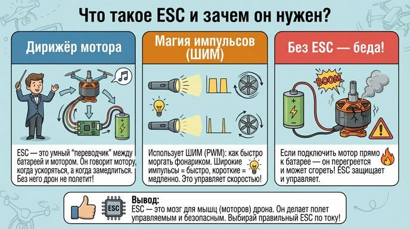
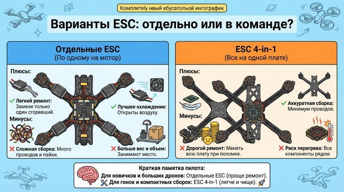
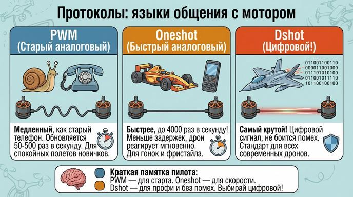

Регуляторы оборотов: дирижеры моторов в твоём дроне
Привет, юный инженер! Помнишь, как моторы — это сердце дрона, которое даёт ему силу для полёта? Но сердце не может работать само по себе — ему нужен "дирижёр", который говорит, когда ускоряться, а когда замедлиться. Это и есть регулятор оборотов, или ESC (Electronic Speed Controller). Сегодня разберёмся, как он работает, почему без него мотор сгорит, и как выбрать правильный. Готов? Взлетаем!
Что такое ESC и зачем он нужен?
Представь: ты подключаешь мотор прямо к аккумулятору — ба-бах! Мотор закрутится на максимум, перегреется и может даже загореться. ESC — это умный "переводчик" между аккумулятором и мотором. Он берёт постоянный ток от батареи и превращает его в импульсы, чтобы мотор крутился ровно на нужной скорости. ESC управляет скоростью, направлением вращения и даже может тормозить мотор. Без него дрон — просто груда деталей!
Принцип работы: магия импульсов
ESC использует штуку под названием ШИМ (PWM — широтно-импульсная модуляция). Это как быстро моргать фонариком: если моргаешь часто и долго (широкие импульсы) — свет яркий, мотор крутится быстро. Если редко и коротко — мотор замедляется. Внутри ESC есть микроконтроллер (маленький компьютер), мощные транзисторы, которые включают/выключают ток, и BEC — стабилизатор, который даёт ровное напряжение для других частей дрона, как полётный контроллер.
Ключевые характеристики: не перегори!
<Самое важное в ESC — сила тока, например, 30A. Это максимум, который он может выдержать без перегрева. Если мотор "ест" 25A на максимуме, бери ESC не меньше 30-35A — всегда оставляй запас 20-30%! Иначе твой дрон превратится в фейерверк. Ещё смотри на напряжение (например, для батареи 4S нужен ESC на 14-16V).

Варианты ESC: отдельно или в команде?
✔ Отдельные ESC: По одному на каждый мотор. Плюсы — легко менять, если один сломается, и они лучше охлаждаются. Минусы — больше проводов, дрон выглядит как паутина.
✔ 4-in-1: Все четыре на одной плате. Компактно, меньше веса, аккуратнее. Идеально для маленьких дронов, но если один сгорит — менять всю плату.

Протоколы: языки общения с мотором
ESC общается с полётным контроллером на разных "языках" — протоколах. Это влияет на скорость реакции дрона:
✔ PWM: Простой и медленный, как старый телефон. Обновляется 50-500 раз в секунду. Подходит для спокойных полётов новичков.
✔ Oneshot (например, Oneshot125): Быстрее, до 4000 раз в секунду! Меньше задержек, дрон реагирует мгновенно. Для гонок, где каждая миллисекунда на счету.
✔ Dshot (Dshot150, 300, 600): Самый крутой, цифровой! Не боится помех, не нуждается в калибровке. Чем выше число — тем быстрее. Стандарт для всех современных дронов.

Краткая памятка от бывалого пилота:
✔ ESC — дирижёр мотора: регулирует скорость через импульсы (ШИМ).✔ Выбирай по току: всегда +20-30% запаса, чтобы не сгорел.
✔ Варианты: отдельные для ремонта, 4-in-1 для компактности.
✔ Протоколы: PWM для старта, Oneshot/Dshot для профи и скорости.
✔ Золотое правило: проверь спецификации перед сборкой!
Удачи на уроках! Скоро мы соберём всё вместе и запустим дрон. Лети безопасно и умно!
Навигация по образовательному курсу
Урок 1. Мир дронов: история, виды и правила безопасности
Урок 2. Рама. Варианты исполнения.
Урок 3. Моторы, электродвигатели.
Урок 4. Пропеллеры.
Урок 5. Регулятор оборотов.
Урок 6. Контроллер полета (автопилот).
Урок 7. Приемник-передатчик (ПДУ).
Урок 8. Аккумуляторная батарея (АКБ). Виды и маркировка.
Урок 9. Вспомогательное оборудование.
Для перехода к следующему учебному материалу используйте кнопку «Вперед» в верхней навигации.